Code
ggamma(mean = c(10, 20, 30), sd = c(10, 10, 10), show = "ss")Filippo Gambarota
University of Padova
2023
Last Update: 2023-11-29
The Gamma distribution has several :parametrizations. One of the most common is the shape-scale parametrization:
\[ f(x;k,\theta )={\frac {x^{k-1}e^{-x/\theta }}{\theta ^{k}\Gamma (k)}} \] Where \(\theta\) is the scale parameter and \(k\) is the shape parameter.
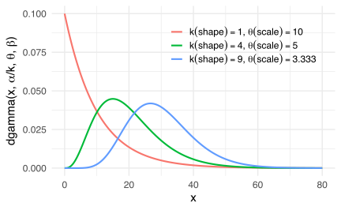
The mean and variance are defined as:
Another important quantity is the coefficient of variation defined as \(\frac{\sigma}{\mu}\) or \(\frac{1}{\sqrt{k}}\) (or \(\frac{1}{\sqrt{\alpha}}\)).
Again, we can see the mean-variance relationship:
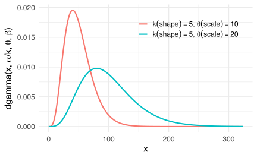
To convert between different parametrizations, you can use the gamma_params() function:
gamma_params <- function(shape = NULL, scale = 1/rate, rate = 1,
mean = NULL, sd = NULL,
eqs = FALSE){
if(eqs){
cat(rep("=", 25), "\n")
cat(eqs()$gamma, "\n")
cat(rep("=", 25), "\n")
}else{
if(is.null(shape)){
var <- sd^2
shape <- mean^2 / var
scale <- mean / shape
rate <- 1/scale
} else if(is.null(mean) & is.null(sd)){
if(is.null(rate)){
scale <- 1/rate
} else{
rate <- 1/scale
}
mean <- shape * scale
var <- shape * scale^2
sd <- sqrt(var)
}else{
stop("when shape and scale are provided, mean and sd need to be NULL (and viceversa)")
}
out <- list(shape = shape, scale = scale, rate = rate, mean = mean, var = var, sd = sd)
# coefficient of variation
out$cv <- 1/sqrt(shape)
return(out)
}
}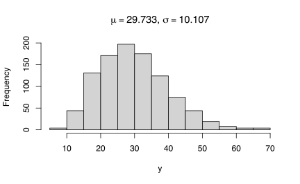
gamma_params() function we can think in terms of \(\mu\) and \(\sigma\) and generate the right parameters (e.g., shape and rate).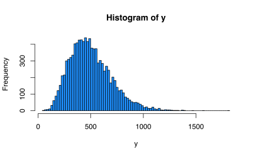
Then we can fit an intercept-only model with the Gamma family and a log link function. You have to specify the link because the default is inverse.
#>
#> Call:
#> glm(formula = y ~ 1, family = fam, data = dat)
#>
#> Deviance Residuals:
#> Min 1Q Median 3Q Max
#> -1.6630 -0.3210 -0.0508 0.2199 1.6402
#>
#> Coefficients:
#> Estimate Std. Error t value Pr(>|t|)
#> (Intercept) 6.213351 0.003974 1563 <2e-16 ***
#> ---
#> Signif. codes: 0 '***' 0.001 '**' 0.01 '*' 0.05 '.' 0.1 ' ' 1
#>
#> (Dispersion parameter for Gamma family taken to be 0.1579374)
#>
#> Null deviance: 1633.1 on 9999 degrees of freedom
#> Residual deviance: 1633.1 on 9999 degrees of freedom
#> AIC: 133168
#>
#> Number of Fisher Scoring iterations: 4exp) to get the original scale:#> mean mean_true b0.(Intercept)
#> 499.3717 500.0000 499.3717fam() object if you are not sure about the link functions as fam$linkinv(coef(fit0)[1])Now let’s simulate the difference between two groups. Again fixing the \(\mu_0 = 500\), \(\mu_1 = 600\) and a common \(\sigma = 200\). Let’s plot the empirical densities:
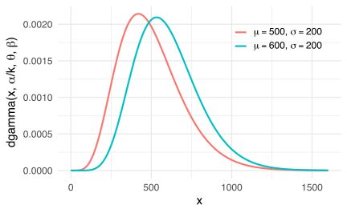
Using the group variable as dummy-coded, \(\beta_0 = \mu_0\) and \(\beta_1 = \mu_1 - \mu_0\). Note that we are in the log scale.
ns <- 1e4
m0 <- 500
m1 <- 600
s <- 200
# parameters, log link
b0 <- log(m0)
b1 <- log(m1) - log(m0) # equivalent to log(m1 / m0)
x <- rep(c(0, 1), each = ns/2)
lp <- b0 + b1 * x # linear predictor
mu <- exp(lp) # inverse exp link
gm <- gamma_params(mean = mu, sd = s)
y <- rgamma(ns, shape = gm$shape, scale = gm$scale)
dat <- data.frame(y, x)Let’s see the simulated data:
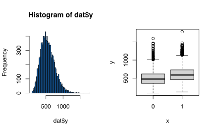
Now we can fit the model and extract the parameters:
#>
#> Call:
#> glm(formula = y ~ x, family = fam, data = dat)
#>
#> Deviance Residuals:
#> Min 1Q Median 3Q Max
#> -1.33412 -0.29257 -0.04102 0.20152 1.42871
#>
#> Coefficients:
#> Estimate Std. Error t value Pr(>|t|)
#> (Intercept) 6.218174 0.005196 1196.74 <2e-16 ***
#> x 0.189950 0.007348 25.85 <2e-16 ***
#> ---
#> Signif. codes: 0 '***' 0.001 '**' 0.01 '*' 0.05 '.' 0.1 ' ' 1
#>
#> (Dispersion parameter for Gamma family taken to be 0.1349891)
#>
#> Null deviance: 1475.2 on 9999 degrees of freedom
#> Residual deviance: 1385.1 on 9998 degrees of freedom
#> AIC: 133726
#>
#> Number of Fisher Scoring iterations: 4The other estimated parameter is the dispersion that is defined as the inverse of the shape. We have not a single shape but the average is roughly similar to the true value.
shape parametrizationbrms and other packages1. The \(\mu\) is the same as before and the shape (\(\alpha\)) determine the skewness of the distribution. For the Gamma, the skewness is calculated as \(\frac{2}{\sqrt{\alpha}}\).shape parametrization2/sqrt(shape) 0.632 and is similar to the value computed on the simulated dataWe can plot the function that determine the skewness of the Gamma fixing \(\mu\) and varying \(\alpha\):
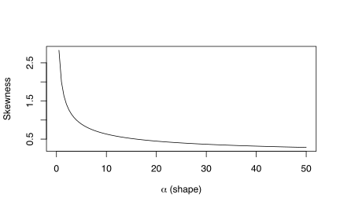
Compared to the \(\mu\)-\(\sigma\) method, here we fix the skewness and \(\mu\), thus the \(\hat \sigma\) will differ when \(\mu\) change but the skewness is the same. The opposite is also true.
mu <- c(50, 80)
# mu-shape parametrization
y1 <- rgamma(1e6, shape = 10, scale = mu[1]/10)
y2 <- rgamma(1e6, shape = 10, scale = mu[2]/10)
# mu-sigma parametrization
gm <- gamma_params(mean = mu, sd = c(20, 20))
x1 <- rgamma(1e6, shape = gm$shape[1], scale = gm$scale[1])
x2 <- rgamma(1e6, shape = gm$shape[2], scale = gm$scale[2])
par(mfrow = c(1,2))
plot(density(y1), lwd = 2, main = latex("\\mu and \\alpha parametrization"), xlab = "x", xlim = c(0, 250))
lines(density(y2), col = "firebrick", lwd = 2)
legend("topright",
legend = c(latex("\\mu = %s, \\alpha = %s, \\hat{\\sigma} = %.0f, sk = %.2f", mu[1], 10, sd(y1), psych::skew(y1)),
latex("\\mu = %s, \\alpha = %s, \\hat{\\sigma} = %.0f, sk = %.2f", mu[2], 10, sd(y2), psych::skew(y1))),
fill = c("black", "firebrick"))
hatshape <- c(gamma_shape(x1, "invskew"), gamma_shape(x2, "invskew"))
plot(density(x1), lwd = 2, main = latex("\\mu and \\sigma parametrization"), xlab = "x", xlim = c(0, 250))
lines(density(x2), col = "firebrick", lwd = 2)
legend("topright",
legend = c(latex("\\mu = %s, \\sigma = %s, \\hat{\\alpha} = %.0f, sk = %.2f", mu[1], 20, hatshape[1], psych::skew(x1)),
latex("\\mu = %s, \\sigma = %s, \\hat{\\alpha} = %.0f, sk = %.2f", mu[2], 20, hatshape[2], psych::skew(x2))),
fill = c("black", "firebrick"))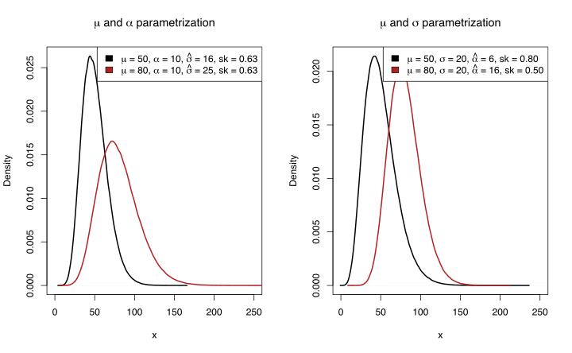
The coefficient of variation \(\frac{\sigma}{\mu} = \frac{1}{\sqrt{\alpha}}\) is constant under the \(\mu\)-\(\alpha\) parametrization while can be different under the \(\mu\)-\(\sigma\) one when \(\alpha\) or \(\sigma\) is fixed across conditions.
#> [1] 0.3164310 0.3163858#> [1] 0.4003217 0.2496164The \(\alpha\) parameter allow to control the coefficient of variation.
See https://civil.colorado.edu/~balajir/CVEN6833/lectures/GammaGLM-01.pdf. The \(\sigma = \frac{\mu}{\sqrt{\alpha}}\).
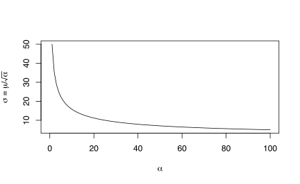
As noted by Agresti (2015), fixing \(\alpha\) and varying \(\mu\), the coefficient of variation will be constant and the standard deviation \(\sigma\) increase proportionally with \(\mu\). Given that \(\sigma = \frac{\mu}{\sqrt{\alpha}}\):
mu1 <- 20
mu2 <- 40
shape <- 10 # alpha
y1 <- rgamma(1e5, shape = shape, scale = mu1/shape)
y2 <- rgamma(1e5, shape = shape, scale = mu2/shape)
c(mean(y1), mean(y2))
#> [1] 20.01098 39.99907
c(sd(y1), sd(y2)) # sd increase
#> [1] 6.345103 12.656330
c(cv(y1), cv(y2)) # cv is constant
#> [1] 0.3170811 0.3164156
c(psych::skew(y1), psych::skew(y2)) # skewness is similar
#> [1] 0.6278559 0.6333914The Simon effect is the difference in accuracy or reaction time between trials in which stimulus and response are on the same side and trials in which they are on opposite sides, with responses being generally slower and less accurate when the stimulus and response are on opposite sides.
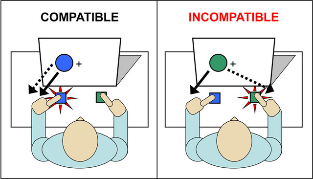
Source: Wildenberg et al. (2010)
Let’s import the data/simon.rda file1. You can use the load() function or the read_rda().
#> # A tibble: 6 × 15
#> submission_id RT condition correctness class experiment_id key_pressed
#> <dbl> <dbl> <chr> <chr> <chr> <dbl> <chr>
#> 1 7432 1239 incongruent correct Intro C… 52 q
#> 2 7432 938 incongruent correct Intro C… 52 q
#> 3 7432 744 incongruent correct Intro C… 52 q
#> 4 7432 528 incongruent correct Intro C… 52 q
#> 5 7432 706 incongruent correct Intro C… 52 p
#> 6 7432 547 congruent correct Intro C… 52 p
#> # ℹ 8 more variables: p <chr>, pause <dbl>, q <chr>, target_object <chr>,
#> # target_position <chr>, timeSpent <dbl>, trial_number <dbl>,
#> # trial_type <chr>For simplicity, let’s consider only a single subject (submission_id: 7432), otherwise the model require including random effects. We also exclude strange trials with RT > 2500 ms.
Let’s plot the reaction times. Clearly the two distributions are right-skewed with a difference in location (\(\mu\)). The shape also differs between thus also the skewness is probably different:
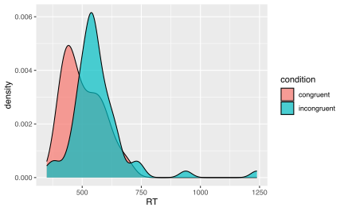
Let’s see some summary statistics. We see the difference between the two conditions.
funs <- list(mean = mean, sd = sd, skew = psych::skew, cv = cv)
summ <- tapply(simon$RT, simon$condition, function(x) sapply(funs, function(f) f(x)))
summ#> $congruent
#> mean sd skew cv
#> 504.1818182 81.7038670 0.5328521 0.1620524
#>
#> $incongruent
#> mean sd skew cv
#> 564.0312500 123.4188852 2.8702013 0.2188157Given that we modelling the difference in \(\mu\), this is the expected difference. We are working on the log scale, thus the model is estimating the log difference or the log ratio.
Let’s fit the model:
#>
#> Call:
#> glm(formula = RT ~ condition, family = Gamma(link = "log"), data = simon)
#>
#> Deviance Residuals:
#> Min 1Q Median 3Q Max
#> -0.44206 -0.12874 -0.04505 0.08526 0.90525
#>
#> Coefficients:
#> Estimate Std. Error t value Pr(>|t|)
#> (Intercept) 6.22294 0.02625 237.053 < 2e-16 ***
#> conditionincongruent 0.11217 0.03580 3.134 0.00218 **
#> ---
#> Signif. codes: 0 '***' 0.001 '**' 0.01 '*' 0.05 '.' 0.1 ' ' 1
#>
#> (Dispersion parameter for Gamma family taken to be 0.03790215)
#>
#> Null deviance: 4.1148 on 118 degrees of freedom
#> Residual deviance: 3.7439 on 117 degrees of freedom
#> AIC: 1424.4
#>
#> Number of Fisher Scoring iterations: 4Plotting the results:
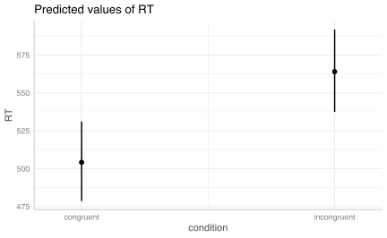
The main parameter of interest here is the \(\beta_1\) representing the difference in \(\mu\). We can interpret \(\exp(\beta_1) = 1.119\) as the multiplicative increase in RT when moving from congruent to incongruent condition. In the RT scale, we have a difference of 59.8494318. Remember that the statistical test is performed on the link-function scale.
emmeans(fit, pairwise ~ condition)$contrast
#> contrast estimate SE df t.ratio p.value
#> congruent - incongruent -0.112 0.0358 117 -3.134 0.0022
#>
#> Results are given on the log (not the response) scale.
emmeans(fit, pairwise ~ condition, type = "response")$contrast
#> contrast ratio SE df null t.ratio p.value
#> congruent / incongruent 0.894 0.032 117 1 -3.134 0.0022
#>
#> Tests are performed on the log scale